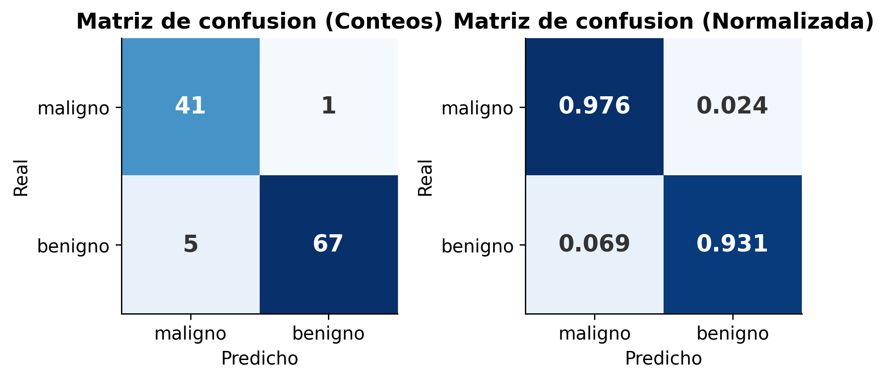
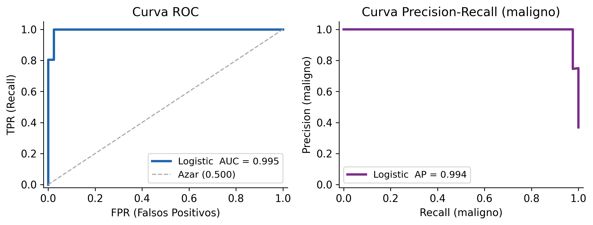
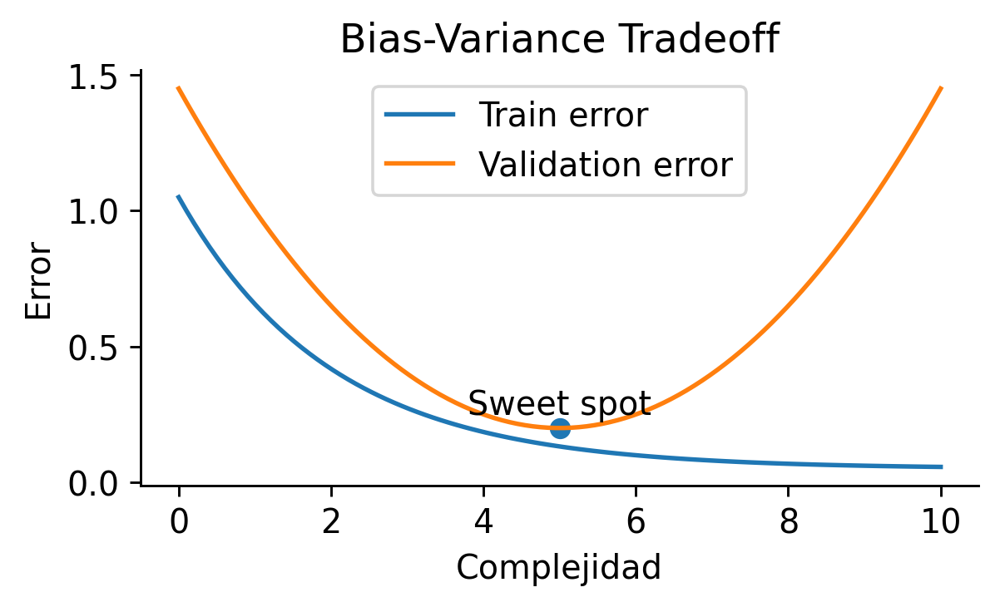
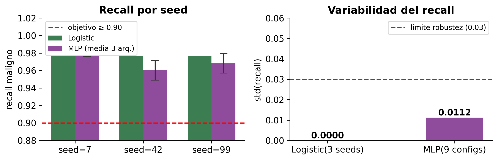
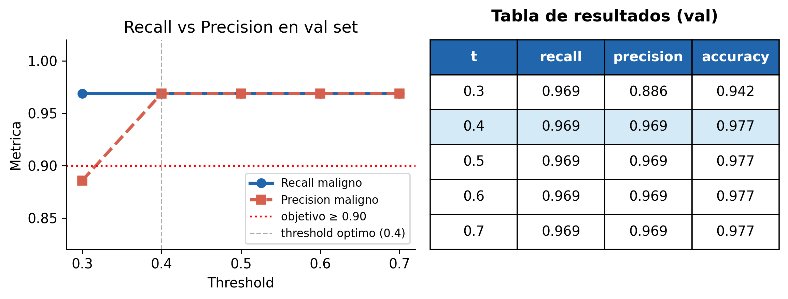
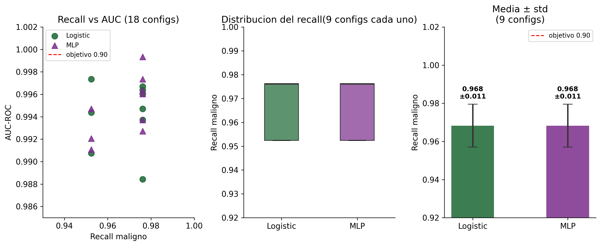
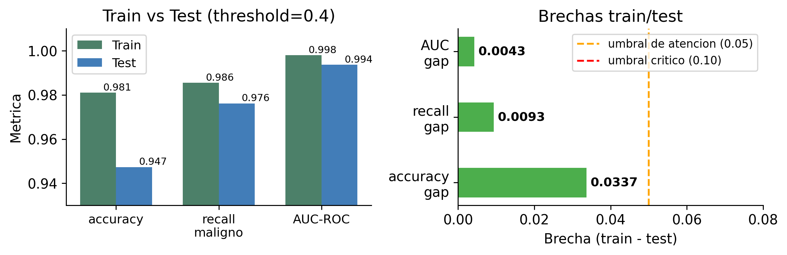
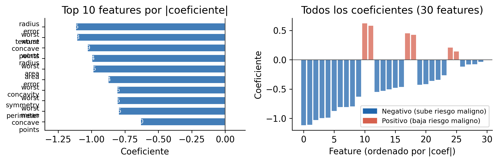
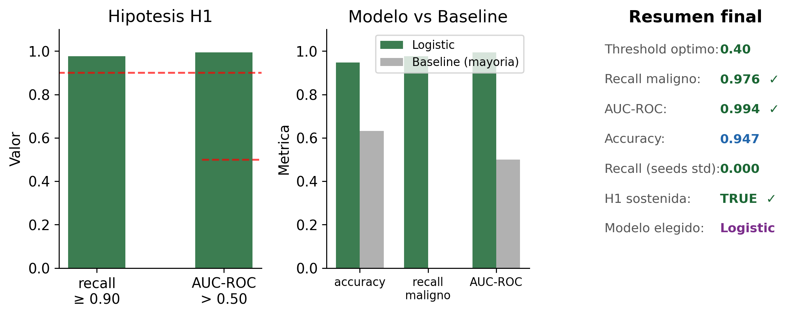

Dia 3: Evaluación, Validación e Interpretación
De metrica unica a evidencia confiable
Workshop IEEE 2026
Orden del día
Dia 3: Evaluacion, Validacion e Interpretacion.
Objetivo de la sesion:
- Evaluar que tan bueno es el modelo.
- Validar que tan confiable es ese resultado.
- Interpretar por que ocurre ese comportamiento.
Mensaje central
Un numero en un solo split no es evidencia. Evidencia es un numero que se sostiene bajo variacion de semillas, hiperparametros y umbrales, y que podemos explicar.
Recordatorio del pipeline (Dia 2)
Pipeline existente (no se reemplaza):
- YAML para decisiones experimentales.
- DVC para reproducibilidad y trazabilidad.
- W&B para comparar runs.
Principio de hoy: cambiar poco, aprender mucho.
Lo que ya tenemos:
configs/baseline.yaml ← unico archivo que cambia
scripts/train.py ← no se toca
scripts/evaluate.py ← no se toca
dvc.yaml ← pipeline intactoLo que agregamos hoy:
scripts/sweep.py ← barrido de seeds/params
outputs/errors/ ← analisis de errores
configs/sweep.yaml ← parametros a variar
models/mlp.py ← arquitectura a compararProblema central
Pregunta clave: ¿Podemos confiar en el modelo?
No alcanza con una sola metrica en un solo split.
Necesitamos evidencia en tres ejes:
- calidad (\(\text{accuracy}, \text{recall}, \text{precision}, \text{F1}, \text{AUC}\)),
- estabilidad (seeds, hiperparametros, threshold),
- explicabilidad (coeficientes vs caja negra).
Por que tres ejes y no uno?
Un modelo puede tener recall = 0.97 en seed 42 y recall = 0.81 en seed 99. El primer numero parece excelente. El segundo revela fragilidad. Sin los tres ejes no sabemos cual de los dos es el resultado real.
Tres respuestas incorrectas sobre evaluacion
Errores clasicos al reportar resultados:
Respuesta incorrecta 1
“Tiene accuracy = 0.96, asi que es excelente.”
R2 calculado sobre que datos? Sobre los mismos que usaste para entrenarlo?
Respuesta incorrecta 2
“El recall es 0.97.”
Pequeno comparado con que? Importan igual todos los errores? Es estable?
Respuesta incorrecta 3
“Lo probe con algunos casos y funciono bien.”
Que significa algunos casos? Como los seleccionaste? Son representativos?
La evaluacion correcta responde cuatro preguntas: que metrica, sobre que datos, como interpretar, y como elegir la configuracion.
De la pregunta del Dia 1 a la evidencia del Dia 3
La pregunta del Dia 1 fue: recall >= 0.90 y AUC > 0.50?
El Dia 2 la respondio con un solo run. Eso no es suficiente.
| Lo que reportamos el Dia 2 | Lo que preguntamos hoy |
|---|---|
| recall = 0.97 con seed 42 | recall = 0.97 +/- cuanto con 5 seeds? |
| AUC = 0.99 con C = 1.0 | AUC cambia si C = 0.01 o C = 100? |
| modelo logistic | logistic sigue siendo mejor que MLP aqui? |
| prediccion puntual | que muestras falla sistematicamente? |
Nota
No invalidamos el resultado del Dia 2. Lo ponemos a prueba.
Evaluacion: mas alla de accuracy
Accuracy puede ocultar errores graves.
\[\text{recall}_{maligno} = \frac{TP}{TP + FN}\]
Por que recall y no accuracy?
Supongamos 100 tumores: 37 malignos, 63 benignos.
Un modelo que siempre predice benigno obtiene:
- accuracy = 63% ← parece razonable
- recall maligno = 0% ← no detecta ningun cancer
Un falso negativo (cancer no detectado) tiene consecuencias clinicas graves. Un falso positivo (alarma falsa) genera una biopsia adicional — molesto, pero corregible.
Las cuatro metricas del dia:
| Metrica | Que mide |
|---|---|
| recall | FN que evitamos |
| precision | FP que generamos |
| F1 | balance recall/precision |
| AUC-ROC | capacidad de ranking |
La jerarquia es: recall primero, AUC segundo, F1 tercero.

¿Qué muestra la figura?
- Dos distribuciones:
- Sano (azul)
- Enfermo (rojo)
- Un threshold (cutoff) separa clases
Idea clave
Las métricas no son independientes:
son decisiones sobre errores.
Por que no existe una sola metrica correcta
La eleccion de metrica es una decision de diseño:
Escenario A — screening clinico:
Errores grandes (cancer no detectado) son cualitativamente peores que errores pequenos.
→ Priorizar recall aunque baje precision.
Escenario B — diagnostico previo a cirugia:
Necesitas alta certeza antes de operar.
→ Priorizar precision aunque baje recall.
La pregunta que define la metrica:
De cada 100 mujeres con cancer, cuantas puede perder el sistema antes de que sea inaceptable?
Si la respuesta es “ninguna”: recall es la metrica.
Si la respuesta es “prefiero intervenir solo cuando estoy seguro”: precision es la metrica.
La metrica traduce las consecuencias del error en un numero.
Regla de diseño experimental
(Día 1) La metrica de evaluacion debe elegirse antes de entrenar el primer modelo, junto con la pregunta cientifica.
La matriz de confusion — resultados reales
Lectura clinica del resultado:
- 41 TP: malignos correctamente detectados ✓
- 1 FN: maligno NO detectado ← el error mas grave
Metrica Modelo Baseline
accuracy 0.947 0.632
recall maligno 0.976 0.000
precision malig. 0.891 —
AUC-ROC 0.994 0.500
H1_recall_ge_090 : True
H1_auc_gt_050 : True
H1_sustained : ✓ TrueCurva ROC vs curva Precision-Recall
Curva ROC
Mide la capacidad de ranking independientemente del threshold.
- Eje X: tasa de FP (1 - especificidad)
- Eje Y: tasa de TP (recall)
- AUC = 0.5 → no discrimina (azar)
- AUC = 1.0 → separacion perfecta
Util para comparar modelos globalmente.
Limitacion: puede ser optimista con datasets desbalanceados. Un modelo que predice siempre positivo tiene AUC = 0.5, no 0.0.
Curva Precision-Recall
Mas informativa con clases desbalanceadas.
- Eje X: recall (sensibilidad)
- Eje Y: precision (valor predictivo positivo)
- AP (area bajo PR) mas sensible al desbalance
Lectura practica:
Si recall sube de 0.90 a 0.99 pero precision baja de 0.95 a 0.60, estamos generando muchos FP para recuperar pocos FN adicionales.
Esa es la decision clinica: cuanto FP toleramos por cada FN evitado?

Validacion: confianza del resultado
Validar no es repetir exactamente el mismo run.
Se agregan tres pruebas de confianza:
- multiples seeds,
- sensibilidad a hiperparametros,
- threshold tuning en validacion.
Si pequenas variaciones cambian mucho el recall, el sistema no es robusto.
Regla practica
Si std(recall) entre 5 seeds supera 0.03, el resultado reportado en un solo run no es confiable. Hay que reportar media +/- std, no un punto.
El problema fundamental del overfitting
Por que las metricas de entrenamiento enganan:
Como un estudiante que memoriza las respuestas del examen anterior:
- En el examen del año pasado: 100/100
- En un examen nuevo: 45/100
Un modelo puede hacer exactamente lo mismo — memorizar el ruido de los datos de entrenamiento sin aprender la relacion subyacente.
Overfitting: el modelo ajusta demasiado bien los datos de entrenamiento, incluyendo su ruido. Generaliza mal.
El sweet spot: visible solo si tenemos datos separados para medir el error de validacion.
Error vs complejidad:

- Error entrenamiento: siempre baja con mas complejidad.
- Error validacion: baja hasta el sweet spot, luego sube.
El punto de cruce no es visible en los datos de entrenamiento.
El principio central de la validacion
La evaluacion del modelo debe hacerse sobre datos que el modelo nunca vio durante el entrenamiento.
Train-Test Split:
Dataset completo (n = 569)
split estratificado
├── Training set (80%)
│ └── desarrollo del modelo
└── Test set (20%)
└── SELLADO hasta el finalProporciones recomendadas:
| Dataset | Train | Test |
|---|---|---|
| < 1K muestras | 70% | 30% |
| 1K–10K | 80% | 20% |
| > 100K | 90% | 10% |
Por que estratificar?
Sin estratificacion, el test set podria tener por azar 20% de malignos en lugar de 37%.
Las metricas varian enormemente entre corridas sin que el modelo haya cambiado.
Con stratify=y:
- Train: exactamente 37% malignos
- Test: exactamente 37% malignos
En sklearn: train_test_split(..., stratify=y)
Usar siempre en clasificacion con desbalance.
Cross-validation: mas alla del split unico
El test set es solo una muestra. Con otra semilla podria ser AUC = 0.78 o AUC = 0.84.
La solucion: no hacer un solo split. Hacer muchos y promediar.
K-Fold CV (K = 5):
Fold 1: [Val | Tr | Tr | Tr | Tr ]
Fold 2: [Tr | Val | Tr | Tr | Tr ]
Fold 3: [Tr | Tr | Val | Tr | Tr ]
Fold 4: [Tr | Tr | Tr | Val | Tr ]
Fold 5: [Tr | Tr | Tr | Tr | Val]
→ AUC = mean ± stdCada observacion aparece exactamente una vez en un fold de validacion.
Ventaja: la desviacion estandar de las K metricas indica que tan estable es el modelo.
Que valor de K usar?
| K | Cuando |
|---|---|
| K = 5 | caso general |
| K = 10 | datasets medianos |
| K = n (LOOCV) | datasets muy pequenos |
CV no reemplaza al test set. Es para desarrollo. El test se evalua una sola vez al final.
Data leakage: el error mas costoso
Un modelo que parece excelente en desarrollo y falla en produccion casi siempre tiene data leakage.
Leakage tipo 1 — variables del futuro:
Usamos “numero de materias reprobadas al final del semestre” para predecir abandono.
AUC en desarrollo = 0.95. Al momento de predecir (inicio de semestre), esa variable no existe.
Regla: cada variable debe estar disponible en el momento en que se hara la prediccion real.
Leakage tipo 2 — preprocesamiento antes del split:
Normalizar con media y desviacion del dataset completo. El escalador “vio” el test set. Las metricas quedan artificialmente buenas.
Leakage tipo 3 — el test que ya no es test:
Entrenamos modelo A. AUC test = 0.76
Ajustamos params. AUC test = 0.79
Cambiamos features. AUC test = 0.82
Reportamos: AUC = 0.82El test dejo de ser test. Optimizamos sobre el.
El flujo correcto:
1. Split train/test → Test: SELLADO
2. EDA solo en train
3. Preprocesador en train (fit)
4. K-Fold CV sobre train
5. Seleccionar mejor modelo
6. Evaluar UNA VEZ en testLa regla de oro: todo lo que aprende de los datos debe aprenderse solo de los datos de entrenamiento.
Validacion por multiples seeds — resultados reales
Pregunta: recall = 0.976 con seed 42 — es representativo o fue suerte?

Lectura de los datos reales
Logistic: recall = 0.976 ± 0.000 en los 3 seeds — varianza cero, el resultado es completamente estable.
MLP: recall medio 0.968 ± 0.011 — mayor variabilidad, aunque todos los runs superan 0.90.
Conclusion: Logistic es mas predecible. La estabilidad es un argumento adicional a su favor.
Threshold tuning — datos del val set
El threshold de 0.5 no es una ley — es una convencion.

Lectura del resultado real
Con t = 0.4: recall = 0.969, precision = 0.969, accuracy = 0.977 — el punto de mayor F1 y mejor balance.
Con t = 0.3: recall = 0.969, precision = 0.886 — mismo recall, mas FP (menos precision). No hay ganancia en recall bajando el threshold aqui.
El threshold optimo se elige siempre en val set, nunca mirando el test set.
Experimento central: Logistic vs MLP
Comparamos dos familias:
- LogisticRegression (baseline interpretable),
- MLPClassifier (mayor capacidad, mayor complejidad).
Pregunta :
- El MLP mejora de forma consistente? O solo agrega varianza y opacidad?
Logistic — lo que ya sabemos:
Resultado: recall = 0.97 +/- 0.004 (5 seeds)
Hiperparametros: que son y por que no se aprenden solos
Parametros del modelo — los aprende el algoritmo:
- En Logistic: los coeficientes \(\beta_0, \beta_1, \ldots, \beta_p\)
- En MLP: los pesos \(w\) y sesgos \(b\) de cada capa
Se obtienen minimizando la funcion de perdida sobre los datos de entrenamiento.
Hiperparametros — los elige el analista antes de entrenar:
- En Logistic:
C(inverso de regularizacion) - En MLP: numero de capas, neuronas por capa,
alpha - En cualquier modelo:
random_state,max_iter
Por que no aprender C con gradient descent?
Logistic con regularizacion minimiza:
\[\text{MSE} + \frac{1}{C} \sum \beta_j^2\]
Si C tambien se aprende minimizando el MSE de entrenamiento, el optimizador siempre elige C = infinito (sin regularizacion) porque eso minimiza el error en train.
El modelo se sobreajustaria completamente.
Para elegir bien los hiperparametros, necesitamos evaluarlos en datos que el modelo no uso para aprenderlos — por eso usamos CV.
Grid Search: busqueda exhaustiva
Grid Search define un conjunto finito de valores para cada hiperparametro y prueba todas las combinaciones.
from sklearn.model_selection import GridSearchCV
from sklearn.linear_model import LogisticRegression
param_grid = {
"C": [0.01, 0.1, 1.0, 10.0, 100.0],
"class_weight": ["balanced", None],
}
# 5 x 2 = 10 combinaciones x 5 folds = 50 entrenamientos
gs = GridSearchCV(
LogisticRegression(max_iter=500),
param_grid,
cv=5,
scoring="recall", # metrica primaria
refit=True, # re-entrena con la mejor config sobre todo el train set
)
gs.fit(X_train, y_train)
print(f"Mejor config: {gs.best_params_}")
print(f"Recall CV: {gs.best_score_:.4f}")La explosion combinatoria
Con 10 valores por hiperparámetro y K=5, el número de entrenamientos crece exponencialmente: 50 → 500 → 5,000 → 50,000. Con 3 o más hiperparámetros, Grid Search se vuelve impracticable.
Random Search: cuando Grid Search no escala
En problemas reales con muchos hiperparametros, no todos importan igual. Grid Search gasta recursos explorando variaciones de hiperparametros irrelevantes.
from sklearn.model_selection import RandomizedSearchCV
from scipy.stats import loguniform
param_dist = {
"C": loguniform(0.001, 100), # muestrea continuamente
"class_weight": ["balanced", None],
"solver": ["lbfgs", "saga"],
}
# n_iter = presupuesto de evaluaciones
rs = RandomizedSearchCV(
LogisticRegression(max_iter=500),
param_dist,
n_iter=30, # 30 x 5 = 150 entrenamientos vs miles con grid
cv=5,
scoring="recall",
random_state=42,
)
rs.fit(X_train, y_train)Flujo recomendado
- Random Search con presupuesto moderado para explorar el espacio. (screening)
- Identificar la region prometedora.
- Grid Search fino en esa region.
Para Logistic con 1-2 hiperparametros: Grid Search es suficiente. Para MLP con 4+ hiperparametros: Random Search primero.
Resultados y trade-offs

Resultados del sweep (18 configs totales):
| Criterio | Logistic (9) | MLP (9) |
|---|---|---|
| recall medio | 0.968 | 0.968 |
| recall std | 0.012 | 0.012 |
| AUC medio | 0.994 | 0.995 |
| H1 todos los runs | si | si |
| interpretable | si | no |
| tiempo train | < 1 s | ~2 s |
Ambos modelos sostienen H1. La diferencia en recall es minima.
Mensaje clave
Los modelos tienen rendimiento estadisticamente equivalente en este dataset.
Logistic gana por:
- Interpretabilidad directa (coeficientes)
- Misma estabilidad a menor costo computacional
- Explicabilidad regulatoria
La mejora del MLP no justifica la opacidad.
La optimizacion como dialogo con el dominio
Caso de desercion estudiantil con restriccion de recursos:
| C | Recall | Precision | F1 | N predichos |
|---|---|---|---|---|
| 0.01 | 0.62 | 0.71 | 0.66 | 98 |
| 0.1 | 0.74 | 0.65 | 0.69 | 127 |
| 1.0 | 0.81 | 0.58 | 0.68 | 156 |
| 10.0 | 0.83 | 0.54 | 0.65 | 172 |
| 100.0 | 0.84 | 0.52 | 0.64 | 181 |
La optimizacion como dialogo con el dominio
La decision no es matematica, es de negocio
Contexto: el sistema puede intervenir con 150 estudiantes por semestre.
- C = 100: recall maximo, pero 181 predicciones — excede capacidad.
- C = 1: recall 0.81, 156 predicciones — ligeramente sobre capacidad, negociable.
- C = 0.1: 127 predicciones, recall aceptable 0.74.
Recomendacion: C = 1. Argumento: captura 81% de estudiantes en riesgo con una carga ligeramente superior a 150. El equipo puede considerar ampliar capacidad levemente.
Grid Search y Random Search generan las opciones. La decision final requiere dialogo con el stakeholder.
Analisis de errores
Se genera outputs/errors/errors.csv con:
- features de la muestra,
- etiqueta real,
- prediccion,
- probabilidades,
- tipo de error (FP/FN de maligno).
# Como se genera (en evaluate.py)
errors = pd.DataFrame(X_test, columns=feature_names)
errors["y_true"] = y_test
errors["y_pred"] = preds
errors["p_maligno"] = proba[:, 0]
errors["error_type"] = errors.apply(
lambda r: "FN_maligno" if r.y_true==0 and r.y_pred==1
else "FP_maligno" if r.y_true==1 and r.y_pred==0
else "OK", axis=1
)
errors[errors.error_type != "OK"].to_csv(
"outputs/errors/errors.csv", index=False
)Preguntas al revisar el CSV:
- Los FN (malignos perdidos): tienen features atipicas?
- Tienen
p_malignomuy cerca de 0.5? (casos ambiguos) - Son los mismos casos con todas las seeds? (error sistematico vs estocastico)
Si los mismos casos fallan con Logistic y MLP, el error es del dato, no del modelo.
Lectura practica de errors.csv
radius_mean texture_mean ... y_true y_pred p_maligno error_type
12.3 18.2 ... 0 1 0.43 FN_maligno
11.8 17.6 ... 0 1 0.48 FN_maligno
13.1 22.4 ... 0 1 0.46 FN_malignoPatron a buscar
Si los FN tienen p_maligno entre 0.40 y 0.50 con threshold = 0.50, son casos que el modelo considera ambiguos. La solucion puede ser bajar el threshold, no cambiar el modelo.
Si los FN tienen p_maligno < 0.30, el modelo esta muy equivocado en esas muestras. Hay que investigar las features de esos casos especificos.
Un punto puede ser influyente (cambiar los coeficientes si se elimina) sin tener un error grande, o tener un error grande sin ser influyente. Ambos merecen investigacion.
Diagnosticos: brecha train vs test
Un buen modelo tiene metricas similares en train y test. Una brecha grande indica overfitting.

Lectura del diagnostico
Todas las brechas son menores a 0.05 — el modelo no muestra signos de overfitting severo.
- accuracy gap = 0.034: normal para este tamano de dataset
- recall gap = 0.009: el modelo generaliza bien el recall
- AUC gap = 0.004: discriminacion consistente entre train y test
Conclusion: el modelo aprendio patrones reales, no ruido de los datos de entrenamiento.
Interpretacion de los coeficientes reales del modelo
Interpretacion — coeficientes reales del modelo

Lectura de los coeficientes reales
Los 3 features mas influyentes son radius error, worst texture y worst concave points — todos con coeficiente negativo: mayor valor del feature → mayor probabilidad de maligno (clase 0).
Esto es consistente con el conocimiento medico: tumores malignos son mas grandes, mas irregulares y con mayor variabilidad de forma. El modelo aprendio los patrones correctos.
MLP: sin coeficientes interpretables. Si MLP y Logistic fallan en los mismos casos, el problema es del dato, no del modelo.
Top features de Logistic — por que importan
| Feature | Coef. | Significado clinico |
|---|---|---|
radius error |
-1.115 | variabilidad del radio → tumor irregular |
worst texture |
-1.108 | textura maxima → tejido rugoso maligno |
worst concave points |
-1.029 | concavidades extremas → forma irregular |
worst radius |
-0.994 | radio maximo → tumor grande |
worst area |
-0.986 | area maxima → correlaciona con tamano |
Conexion con conocimiento medico
Los features de morfologia (perimetro, concavidades, radio) son exactamente lo que un radiologo evalua visualmente. El modelo aprendio patrones consistentes con la literatura medica — eso refuerza la confianza en el resultado.
Del PDF: los diagnosticos son preguntas, no sentencias. Si un coeficiente tiene signo inesperado, investigar antes de reportar — puede ser multicolinealidad, no un error del modelo.
Discusion
¿Mas complejo = mejor?
No necesariamente.
Decidimos por evidencia conjunta:
- desempeno en test,
- estabilidad entre seeds,
- sensibilidad a threshold,
- capacidad de explicacion.
Discusion
Marco de decision:
Si MLP mejora recall > 0.03 de forma estable (std < 0.01 entre seeds) y la mejora se sostiene en analisis de errores: → usar MLP, documentar limitaciones
Si la mejora es < 0.03 o inestable: → usar Logistic, documentar robustez y explicabilidad
Preguntas guia:
Si MLP sube accuracy pero baja recall maligno, es mejor o peor?
Si cambia mucho entre seeds, confiarias en el resultado reportado?
Si MLP mejora poco y pierde interpretabilidad, vale la pena el costo?
Que error es mas critico aqui: FP o FN de maligno?
El circulo completo de la evaluacion
El proceso es iterativo, no lineal:
flowchart LR
A["Problema\ny metricas"] --> B["Grid / Random\nSearch + CV"]
B --> C["Seleccion\nde modelo"]
C --> D["Diagnosticos\nde residuales"]
D --> E{"Patrones\nen errores?"}
E -->|Si| F["Mejorar\nespecificacion"]
F --> B
E -->|No| G["AIC / BIC\nvalidacion teorica"]
G --> H{"CV y AIC/BIC\ncoinciden?"}
H -->|Si| I["Evidencia\nrobusta"]
H -->|No| F
I --> J["Evaluar UNA\nVEZ en test"]
La seleccion de modelos no es una receta con pasos fijos
Es una decision de diseño que requiere entender el problema, conocer las herramientas, saber interpretar los resultados y reconocer las limitaciones. No hay respuestas universales. Hay principios que guian las decisiones.
Conexion con modelos modernos
A medida que sube complejidad, sube necesidad de validacion fuerte.
Este dia es un puente hacia modelos mas modernos:
- mayor capacidad,
- mayor riesgo de sobreajuste,
- menor interpretabilidad directa.
La disciplina experimental del pipeline es la defensa principal.
La escala de complejidad:
| Modelo | Params | Interpretable | Necesita seeds |
|---|---|---|---|
| Logistic | ~30 | si | poco |
| MLP (64,32) | ~2500 | no | mas |
| Random Forest | variable | parcial | mas |
| XGBoost | variable | parcial | mas |
| Red profunda | millones | no | critico |
Regla: cuanta mas capacidad, mas validacion necesaria.
Lo que hicimos hoy aplica siempre:
- multiples seeds → valido para cualquier modelo estocastico
- Grid / Random Search + CV → necesario antes de cualquier deploy
- analisis de errores → obligatorio en dominios clinicos
- AIC/BIC → complementa CV con perspectiva teorica
- interpretacion → requerida en muchos contextos regulatorios (GDPR, FDA)
La herramienta cambia. El rigor experimental no.
Resumen ejecutivo — H1 sostenida

Decision final argumentada
Modelo: LogisticRegression (C=1.0, class_weight=balanced, threshold=0.4)
Argumentos: (1) H1 sostenida con evidencia numerica, (2) recall estable entre seeds (std=0.000), (3) coeficientes interpretables coherentes con conocimiento medico, (4) brecha train/test < 0.04 — sin overfitting.
Cierre
No buscamos el mejor numero aislado.
Buscamos el modelo mas confiable para la decision real.
Checklist de salida de Dia 3:
El entregable del dia
No es el modelo con mayor recall.
Es el argumento que justifica por que ese modelo es el correcto para este problema:
- metrica primaria cumplida (recall >= 0.90),
- resultado estable bajo variacion,
- errores criticos conocidos y documentados,
- explicacion coherente con el dominio,
- limitaciones reconocidas explicitamente.
Discusion final (produccion)
Ejemplos de monitoreo:
- drift de distribucion de features (cambia la poblacion de pacientes?)
- caida de recall en maligno mes a mes
- cambio en tasa de falsos negativos por cohorte
- estabilidad de threshold recomendado
- tiempo de inferencia si el modelo escala
Herramienta: W&B Monitoring o Evidently AI para deteccion de drift.
Lo que faltaria antes de produccion:
- Validacion externa (otro hospital, otra cohorte)
- Evaluacion de equidad (funciona igual en todos los subgrupos demograficos?)
- Auditoria de datos (quien recopilo las muestras? como?)
- Revision etica y regulatoria
- Plan de rollback si el recall cae por debajo de 0.90
Ninguno de estos pasos invalida el trabajo de hoy. Los complementa.
No es suficiente reportar “mejor modelo: C = 1”. Hay que explicar que configuraciones evaluaron, que trade-offs encontraron, como se conecta con las prioridades del stakeholder, y que limitaciones reconocen.

Sesión 3 · Workshop ML · Clasificador de cáncer de mama · CPU